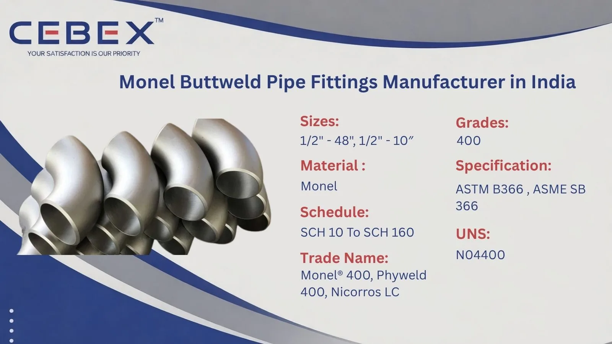

Leading Manufacturer & Exporter of Monel Buttweld Pipe Fittings
In the demanding world of industrial piping, the reliability and corrosion resistance of every fitting are crucial to the success of your project. As a leading Monel Buttweld Pipe Fittings Manufacturer in India, CEBEX STEEL INDIA has earned the trust of EPC contractors, procurement managers, and industrial buyers across India, Africa, and global markets. We specialize in the design, manufacture, and export of high-quality Monel Buttweld Pipe Fittings that meet the most stringent international standards, ensuring leak-proof connections and long-term durability in even the harshest environments.
Our manufacturing facility is equipped with advanced forming and machining technology, enabling us to produce Monel Buttweld Pipe Fittings with exceptional dimensional accuracy and surface finish. Whether you are building a refinery, upgrading a power plant, or managing a shipbuilding project, our fittings are engineered to deliver consistent performance and reliability.

Selecting the right supplier for Monel Buttweld Pipe Fittings is a strategic decision that impacts the safety, efficiency, and cost-effectiveness of your operations. CEBEX STEEL INDIA stands out as a preferred partner due to our unwavering commitment to quality, technical expertise, and customer satisfaction. We are ISO 9001:2015 and PED certified, reflecting our adherence to global quality management systems and our ability to meet the requirements of international projects.
Our in-house laboratory is equipped to perform a comprehensive range of mechanical, chemical, and non-destructive tests, ensuring that every batch of fittings meets or exceeds client specifications. We maintain full traceability from raw material to finished product, and all shipments are accompanied by detailed mill test certificates (EN 10204 3.1/3.2), NDT reports, and compliance documentation. Our export team is experienced in handling complex logistics, documentation, and packing requirements, making us a reliable partner for buyers in Africa, the Middle East, Southeast Asia, and beyond.
Our Monel Buttweld Pipe Fittings are manufactured using premium raw materials sourced from approved mills, and every stage of production is closely monitored for quality assurance. We offer a comprehensive range of fitting types, sizes, and pressure ratings, suitable for a wide variety of industrial applications. Whether your requirement is for standard ASME fittings or custom-designed solutions, our engineering team is equipped to deliver with precision and speed.
The following table summarizes the key features and specifications of our Monel Buttweld Pipe Fittings:
| Feature | Specification / Detail |
|---|---|
| Standards | ASTM, ASME, EN, DIN, BS, JIS, GOST, ISO |
| Grades | Monel 400 |
| Pressure Ratings | SCH 10, 20, 40, 80, 160, XXS; Custom Schedules |
| Size Range | ½" NB to 48" NB (DN15–DN1200) |
| Surface Finish | Machined, pickled, passivated, or as per client spec |
| Documentation | Mill Test Certificate (EN 10204 3.1/3.2), NDT, PMI, Hydro, etc. |
Our product portfolio covers the full spectrum of Monel Buttweld Pipe Fittings, each designed for specific applications and operating conditions. We manufacture elbows (long/short radius), tees (equal/reducing), reducers (concentric/eccentric), caps, stub ends, crosses, and custom fittings based on client drawings and specifications.
Our engineering team works closely with clients to ensure that every fitting meets the precise requirements of their project, from material selection to dimensional tolerances.
Material selection is a critical factor in fitting performance, especially in corrosive or marine environments. All materials are sourced from reputed mills and are fully traceable, with heat numbers and batch records maintained for every order.
| Monel Grade | Typical Applications | Standards |
|---|---|---|
| 400 | Chemical, marine, desalination, oil & gas | ASTM B366, ASME SB366 |
Every Monel buttweld fitting is supplied with comprehensive test certificates, including chemical composition and mechanical property reports. This ensures full compliance with project specifications and international codes. Our in-house laboratory conducts spectrographic analysis, tensile testing, hardness testing, and non-destructive examinations such as ultrasonic and radiographic testing.
| Property | Typical Values (Varies by Grade) |
|---|---|
| Tensile Strength | 480–960 MPa |
| Yield Strength | 170–690 MPa |
| Elongation | 30–45% |
| Hardness | 100–300 HB |
| Chemical Elements | Ni, Cu, Fe, Mn, Si, C, S |
All test results are documented and provided with each shipment, ensuring transparency and traceability.
We manufacture Monel Buttweld Pipe Fittings in a wide range of dimensions, from ½" NB to 48" NB, with wall thicknesses from SCH 10 to XXS and custom schedules. Our production is fully compliant with ASME B16.9, B16.28, EN 10253, DIN, and other international standards. The following table illustrates typical dimensions for elbows as per ASME B16.9:
| Size (NB) | Center to End (mm) | Outside Diameter (mm) | Wall Thickness (mm) |
|---|---|---|---|
| ½" | 38 | 21.3 | 2.77 |
| 1" | 51 | 33.4 | 3.38 |
| 2" | 76 | 60.3 | 3.91 |
| 4" | 152 | 114.3 | 6.02 |
| 8" | 305 | 219.1 | 8.18 |
Custom dimensions and special machining are available upon request.
Our Monel Buttweld Pipe Fittings are trusted by leading companies and EPC contractors in a diverse range of industries. In the chemical processing sector, our products are used in reactors, heat exchangers, and piping systems exposed to aggressive acids and corrosive media. Power generation clients rely on our fittings for high-temperature and high-pressure service, while marine and offshore industries specify Monel for its outstanding resistance to oxidation and corrosion.
We also serve the oil and gas, desalination, pollution control, and waste treatment industries, providing tailored solutions for each sector's unique requirements.
Every Monel buttweld fitting undergoes a rigorous inspection process, including dimensional checks, visual inspection, and a full suite of mechanical and non-destructive tests.
Our laboratory is equipped with PMI analyzers, ultrasonic flaw detectors, hardness testers, and hydrostatic test rigs. We provide EN 10204 3.1/3.2 certificates as standard with every shipment.
Our Monel Buttweld Pipe Fittings are packed in export-grade wooden cases or pallets, with each item clearly marked as per client and international requirements.
Our logistics team manages all aspects of export documentation, including commercial invoices, packing lists, certificates of origin, and test certificates. We deliver to major ports in Africa, the Middle East, Southeast Asia, and Europe.
As a leading Monel Buttweld Pipe Fittings Manufacturer in India, we have built a strong reputation for supplying high-quality fittings to major projects across Africa. Our export team understands the unique requirements of African industries and ensures smooth, timely deliveries with complete documentation and compliance. From oil and gas to power and infrastructure, our fittings are trusted by clients in Nigeria, Egypt, Kenya, South Africa, Ethiopia and beyond. To learn more about our specialized solutions for the continent, visit our Africa Monel Buttweld Pipe Fittings Exporter page.
In addition to Monel Buttweld Pipe Fittings, we also manufacture and export Inconel Buttweld Pipe Fittings, Hastelloy Buttweld Pipe Fittings, Duplex Buttweld Pipe Fittings, Super Duplex Buttweld Pipe Fittings, Stainless Steel Buttweld Pipe Fittings, and Titanium Buttweld Pipe Fittings. These advanced alloy buttweld fittings are engineered for highly corrosive and high-pressure industrial environments requiring exceptional mechanical strength, thermal stability, and long-term performance reliability.
Our technical experts assist clients in selecting the optimal alloy fitting solutions based on operating conditions, project specifications, and international industry standards.
Browse our full range:
Our clients choose CEBEX STEEL INDIA for our technical expertise, commitment to quality, and responsive service. We offer direct-from-manufacturer pricing, flexible order quantities, and comprehensive after-sales support. Our engineering team is available to assist with material selection, specification review, and custom design, ensuring that you receive the optimal solution for your application.
All our fittings are manufactured in accordance with ASTM, ASME, EN, DIN, BS, JIS, and GOST standards, with full certification provided.
Yes, every shipment includes EN 10204 3.1/3.2 mill test certificates and additional test reports as required.
Standard sizes are available ex-stock, while custom orders are delivered within 2–4 weeks, depending on quantity and complexity.
Absolutely. We can manufacture to your drawings and specifications, including special alloys and non-standard sizes.
Every fitting is fully traceable, tested, and inspected at every stage, with complete documentation provided.